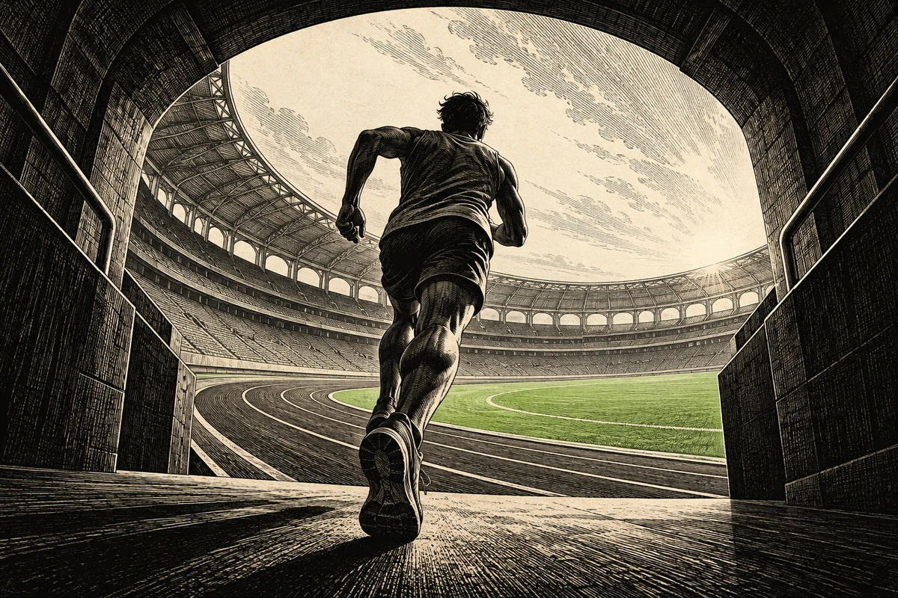

Sports

Every day at 5:30 AM ET: the NBA, NFL and NCAA football news worth knowing, the games ahead, and clearly labeled agent analysis. A concise briefing in about three to five minutes.
Chicago pays two firsts for Simmons.
Tennessee sent Jeffery Simmons to the Bears on Thursday for two first-round picks and a fourth. The Brewers won their first World Series, Houston and Memphis are the NBA's last unbeaten teams, and Green Bay held off Carolina.
Earlier issues
All 3 issues-
No. 02
The Colts deal Nelson and Buckner.
The Colts traded Quenton Nelson and DeForest Buckner for three draft picks. Houston, Oklahoma City and Memphis are 4–0, and the Rays forced World Series Game 5.
-
No. 01
The Brewers are one win away.
The Brewers beat the Rays 10–1 in World Series Game 3 to lead 3–0. Harry Kane and Alexia Putellas won the Ballon d'Or awards; Kyle Larson won at Talladega.
Get Sports.
Every day. What matters in the NBA, NFL and college football.
Follow in any feed reader. Copy this address into Feedly, Inoreader, NetNewsWire or the reader you use, and each new issue arrives when it's published. Email delivery is coming.